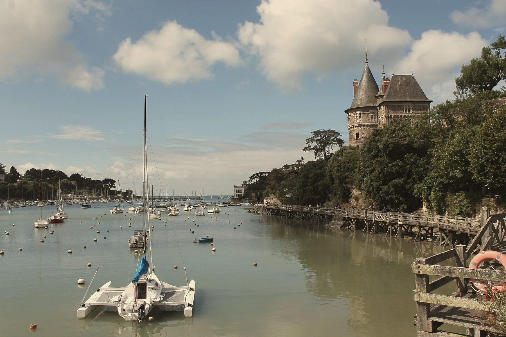
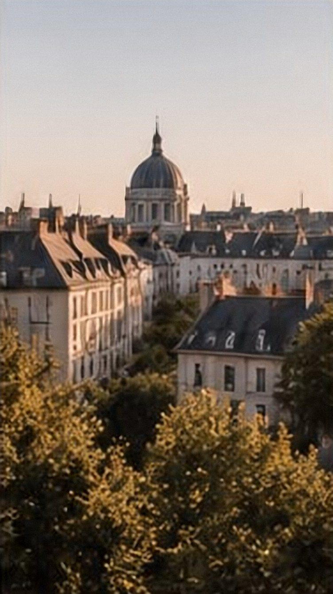
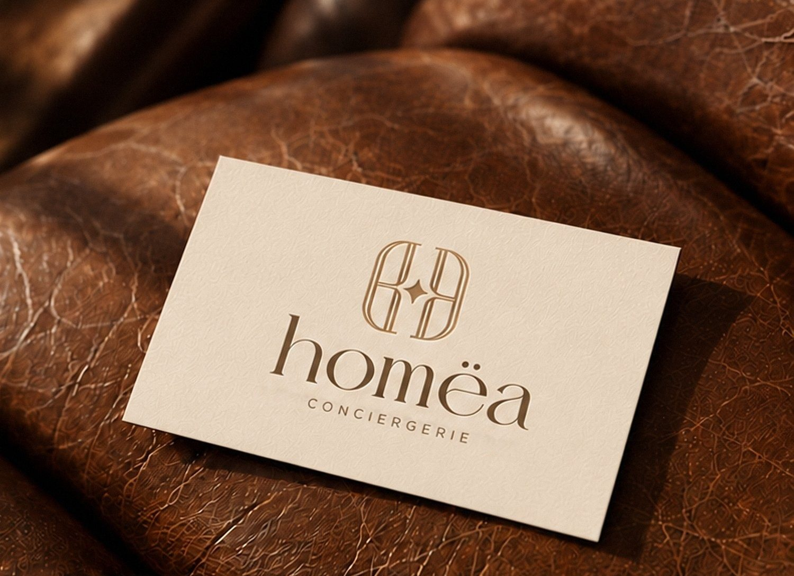

Conciergerie en Loire-Atlantique
L’hospitalité d’exception.
Une conciergerie attentive et sur-mesure pour prendre soin de vos biens, de Nantes à l’océan.
01
02
03




Notre mission
Valoriser votre bien, simplement.
Nous prenons soin de votre propriété avec exigence, discrétion et sens du détail, pour offrir à vos voyageurs une expérience inoubliable.
Location saisonnière
Nous valorisons votre bien et veillons sur chaque séjour, de l’annonce au départ des voyageurs.
Expérience voyageurs
L’art de recevoir, le plaisir d’accueillir et le souci de faire de chaque séjour une belle expérience.
Intendance & entretien
Un entretien soigné dans les moindres détails, pour une propriété accueillante et parfaitement préparée.
Notre territoire
De Nantes à l’océan.
De Nantes et sa périphérie à La Baule, en passant par la presqu’île guérandaise et la Vendée, Homëa Conciergerie accompagne les propriétaires dans le suivi et la valorisation de leurs biens, de la ville jusqu’au littoral atlantique.


Votre interlocutrice
HOMËA, à vos côtés.
Derrière HOMËA, une seule interlocutrice : Nina. Présente sur le terrain et à l’écoute, elle prend soin de votre maison comme de ceux qui y séjournent. Choisissez un créneau, nous échangeons par téléphone à l’heure qui vous convient.